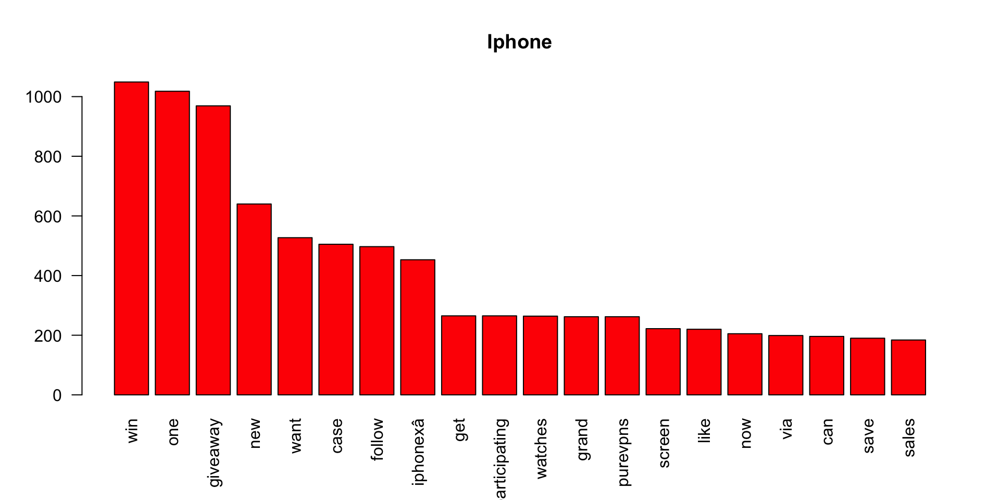
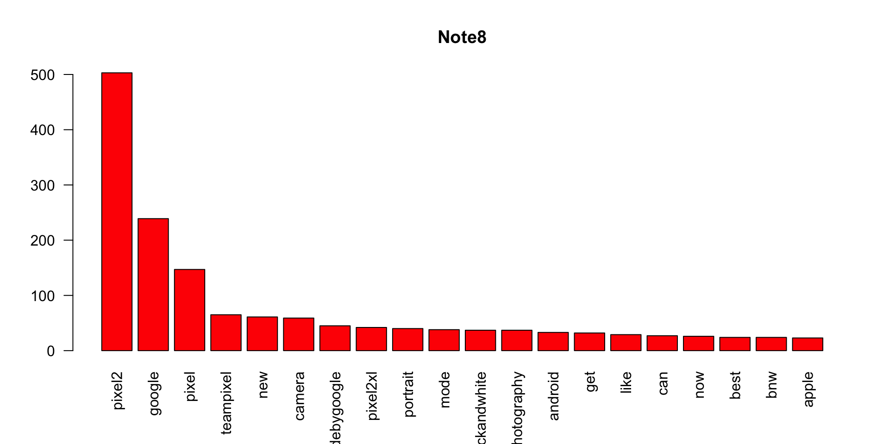
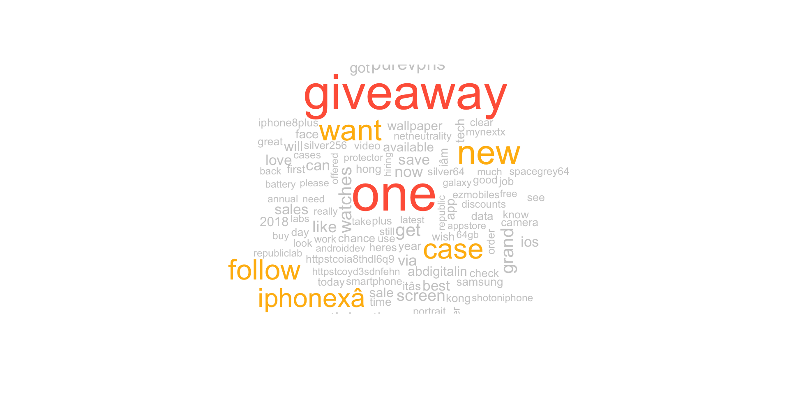
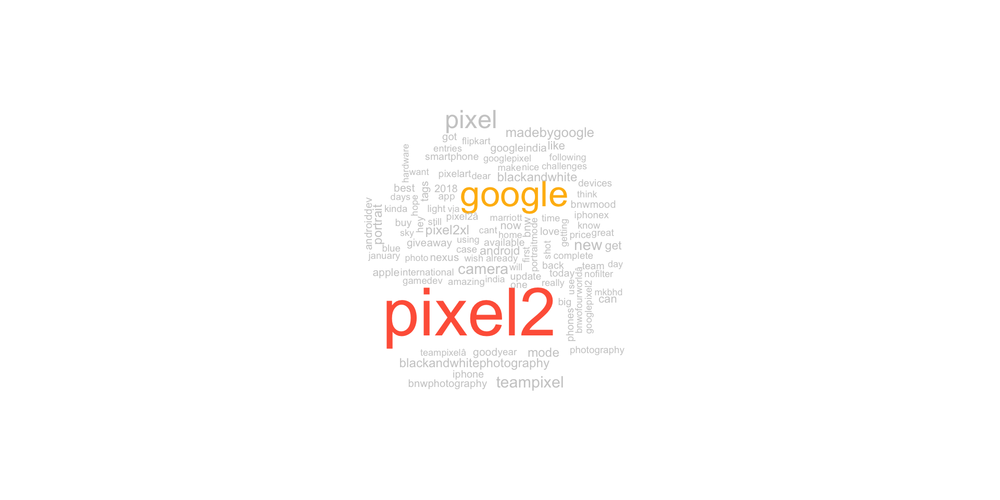
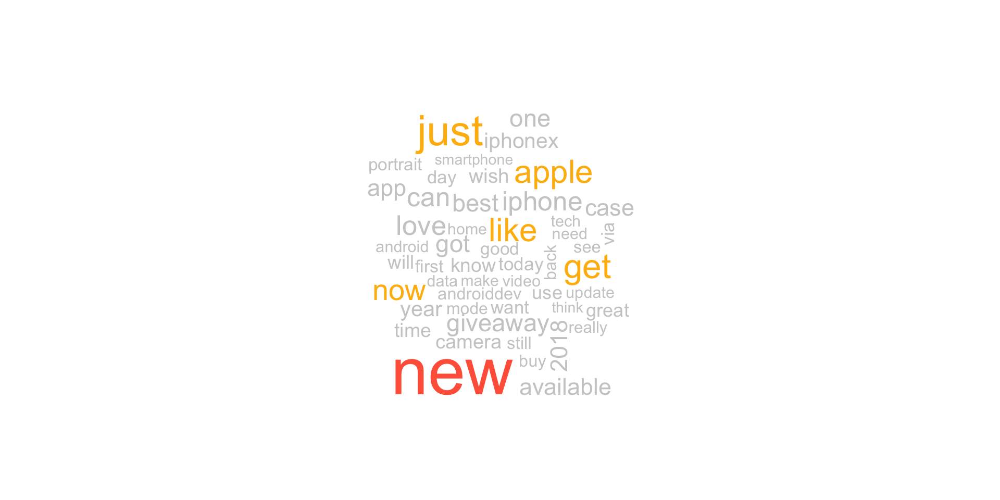
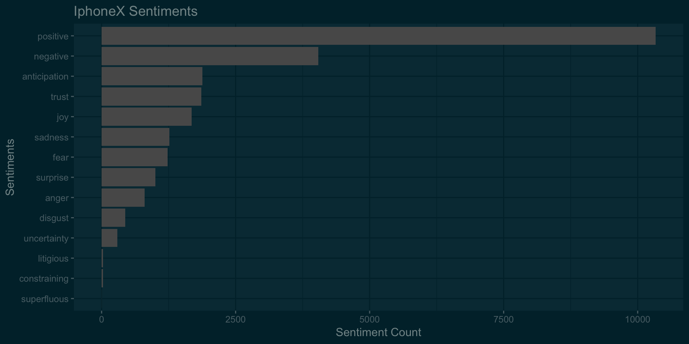
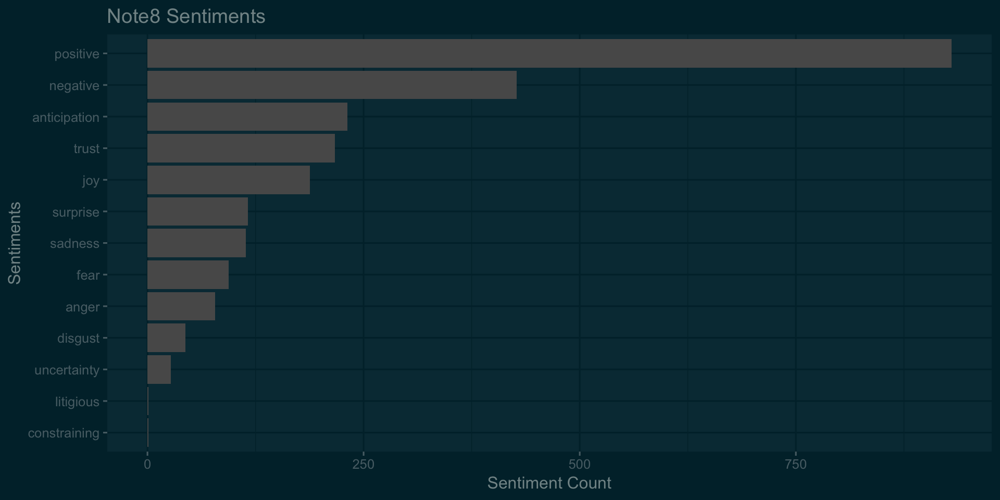
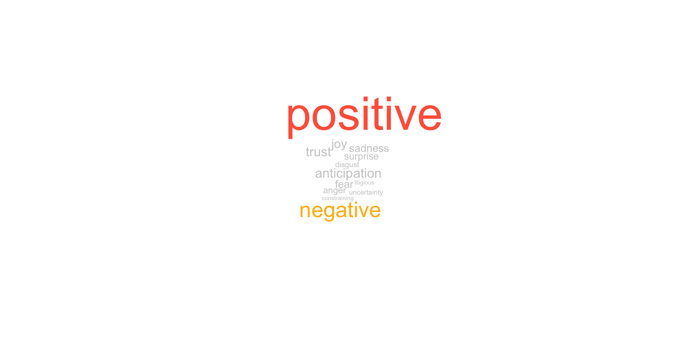
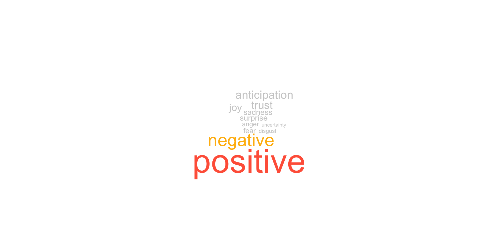

This is an old analysis done sometime after both Note8 and iPhoneX were launched. One limitation of Twitter free API is that you cannot extract historical tweets. So the sentiments may not be relevant today but what the heck, data is always good for understanding the process!
*iphoneX was launched on Sep 12, 2017 and it went on sale sometime on Nov’17. Galaxy Note8 was already out a few months before iPhoneX.
library(twitteR)
library(dplyr)
library(tm)
library(wordcloud)
library(tidytext)
library(tidyverse)
library(sqldf)
library(ggplot2)
library(ggthemes)
consumer_key<-'xxxx'
consumer_secret<-'xxxx'
access_token<-'xxxx'
access_token_secret<-'xxxx'
### Commenting out since the data is already pulled.
#setup_twitter_oauth(consumer_key, consumer_secret, access_token, access_token_secret)
#iphonex = twitteR::searchTwitter('#iphonex -filter:retweets',lang = "en", n = 10000, since = '2017-12-01',
# until = '2018-01-12',retryOnRateLimit = 1)
#d = twitteR::twListToDF(iphonex)
#note8 = twitteR::searchTwitter('#pixel2 -filter:retweets',lang = "en", n = 10000, since = '2017-12-10',
# until = '2018-01-11',retryOnRateLimit = 1)
#d = twitteR::twListToDF(note8)# for now, we will just concentrate on the text of tweets
iphonex<-iphonex$text
note8<-note8$text
iphonex<-as.character(iphonex)
note8<-as.character(note8)
# Text tranformations- removing whitespaces, commong stop words,punctuations
iphonex<-stripWhitespace(iphonex)
## this will remove all other characters except $ sign
iphonex<-gsub("[^[:alnum:][:space:]$]", "", iphonex)
iphonex<-tolower(iphonex)
iphonex<-removeWords(iphonex, c(stopwords("english"),'apple','iphone','iphonex','mobile','phone','ampamp',
'iphone8','retweet','just','comment','amp'))
#iphonex<-unlist(strsplit(iphonex, split = ' '))
#iphonex<-stemDocument(iphonex,language = "english")
note8<-stripWhitespace(note8)
note8<-gsub("[^[:alnum:][:space:]$]", "", note8)
note8<-tolower(note8)
note8<-removeWords(note8, c(stopwords("english"),'samsung','note8','galaxy','mobile','phone','samsungmobile',
'amp','just','ampamp'))
#note8<-unlist(strsplit(note8, split = ' '))
# converting to vector
iphoneTweets<-VectorSource(iphonex)
note8Tweets<-VectorSource(note8)
# converting verctor source to Volatile Corpus, which is a nested list ($content and $meta). This helps extracting individual tweets
# for example, note8Tweets[[20]][1] will retreive 20th tweet and note8Tweets[[20]][2] will retreive metadata of 20th
iphoneTweets<-VCorpus(iphoneTweets)
note8Tweets<-VCorpus(note8Tweets)
# Creating document term matrix
iphone_dtm<-DocumentTermMatrix(iphoneTweets)
note8_dtm<-DocumentTermMatrix(note8Tweets)
iphone_m<-as.matrix(iphone_dtm)
note8_m<-as.matrix(note8_dtm)
dim(iphone_m)## [1] 6888 18095dim(note8_m)## [1] 709 3194## getting the word frequencies
iphone_wf<-colSums(iphone_m)
iphone_wf<-sort(iphone_wf,decreasing = TRUE)
note8_wf<-colSums(note8_m)
note8_wf<-sort(note8_wf,decreasing = TRUE)
#Plotting most frequent words
barplot(iphone_wf[1:20],col='red',las=2,main = 'Iphone')
barplot(note8_wf[1:20],col='red',las=2,main = 'Note8')
wordcloud(names(iphone_wf),iphone_wf,colors = c("grey80", "darkgoldenrod1", "tomato"),max.words = 100)
wordcloud(names(note8_wf),note8_wf,colors = c("grey80", "darkgoldenrod1", "tomato"),max.words = 100)
all_iphone<-paste(iphonex$text,collapse = '')
all_note8<-paste(note8$text,collapse = '')
all_tweets<-c(all_iphone,all_note8)
all_tweets<-stripWhitespace(all_tweets)
all_tweets<-gsub("[^[:alnum:][:space:]$]", "", all_tweets)
all_tweets<-tolower(all_tweets)
all_tweets<-removeWords(all_tweets, c(stopwords("english"),'mobile','phone','amp','ampamp'))
all_tweets<-VectorSource(all_tweets)
all_tweets<-VCorpus(all_tweets)
all_tweets_tdm<-TermDocumentMatrix(all_tweets)
all_tweets_m<-as.matrix(all_tweets_tdm)
commonality.cloud(all_tweets_m,colors = c("grey80", "darkgoldenrod1", "tomato"),max.words = 50)
iphonex<-iphonex$text
note8<-note8$text
iphonex<-as.character(iphonex)
note8<-as.character(note8)
iphonex<-as.tibble(iphonex)
note8<-as.tibble(note8)
#Separating the words
iphonex<-iphonex%>%unnest_tokens(word, value)
note8<-note8%>%unnest_tokens(word, value)
#Counting the sentiment related words for bitcoin
iphonexSentiments<-sqldf('select sentiments.*,iphonex.word as SentimentWord from sentiments, iphonex
where sentiments.word=iphonex.word')
iphonexSentiments<-iphonexSentiments%>%group_by(sentiment)%>%summarise(count=n())
iphonexSentiments<-iphonexSentiments%>%arrange(desc(count))
#Counting the sentiment related words for ripple
note8Sentiments<-sqldf('select sentiments.*,note8.word as SentimentWord from sentiments, note8
where sentiments.word=note8.word')
note8Sentiments<-note8Sentiments%>%group_by(sentiment)%>%summarise(count=n())
note8Sentiments<-note8Sentiments%>%arrange(desc(count))
#plotting
ggplot(data =filter(na.omit(iphonexSentiments)),aes(x = reorder(sentiment,count),y =count))+geom_bar(stat='identity')+
theme_solarized_2(light = FALSE)+coord_flip()+labs(title='IphoneX Sentiments',x='Sentiments',y='Sentiment Count')
ggplot(data =filter(na.omit(note8Sentiments)),aes(x = reorder(sentiment,count),y =count))+geom_bar(stat='identity')+
theme_solarized_2(light = FALSE)+coord_flip()+labs(title='Note8 Sentiments',x='Sentiments',y='Sentiment Count')
wordcloud(iphonexSentiments$sentiment,iphonexSentiments$count,colors = c("grey80", "darkgoldenrod1", "tomato"),max.words = 15)
wordcloud(note8Sentiments$sentiment,note8Sentiments$count,colors = c("grey80", "darkgoldenrod1", "tomato"),max.words = 15)